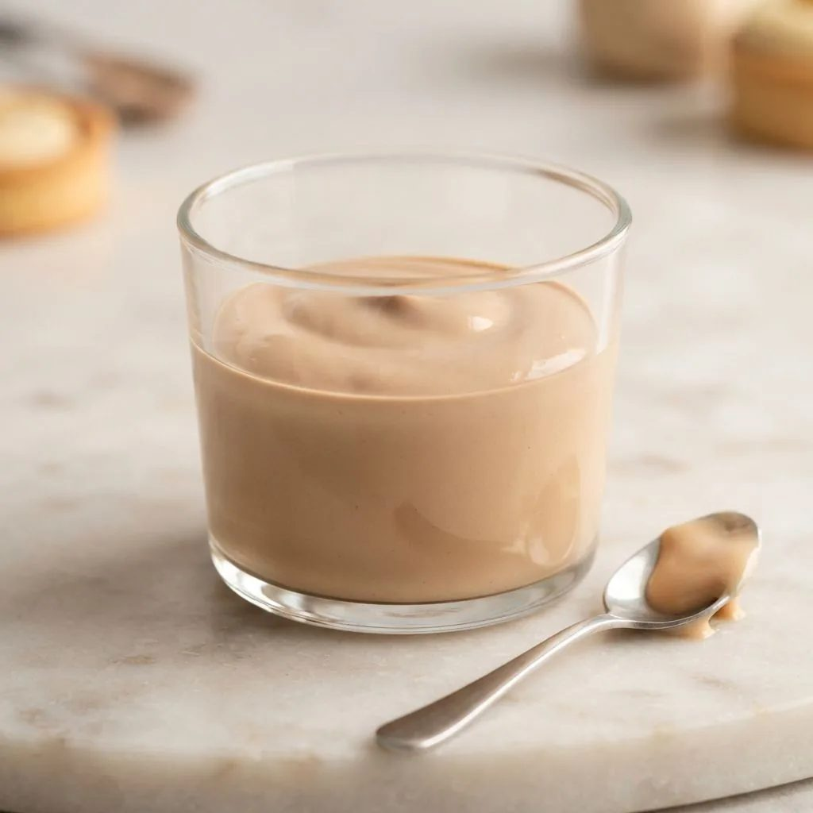

Namelaka chocolat
Crème japonaise ultra-onctueuse, tenue par la gélatine et non par le foisonnement : texture unique, tranchante et fondante.

Appareil
- Lait entier200 g
- Glucose10 g
- Gélatine4 g
- Chocolat noir 64 %250 g
- Crème liquide 35 % froide400 g
Étapes
- Ramollir la gélatine à l'eau très froide, l'essorer soigneusement.
- Chauffer le lait avec le glucose à 80°C, y dissoudre la gélatine hors du feu.
- Verser en trois fois sur le chocolat fondu, émulsionner au centre.
- Ajouter la crème froide en filet et mixer sans incorporer d'air.
- Filmer au contact, réserver 12 h au frais avant utilisation à la poche.
Vous produisez en volume ?
4Cake fournit les professionnels de la pâtisserie au Maroc : chocolat, fruits secs, décors et matériel, avec tarifs et conditionnements grossiste.
Voir les tarifs grossiste